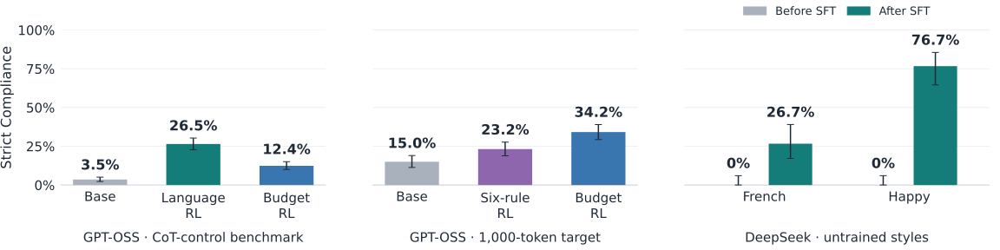

Retired main-slide draft. DeepSeek transfer and language-training notes are retained in the shared backup deck.
Generalization on new CoT control tasks

- Rewarding a reasoning language or token budget also teaches untrained CoT rules; learning six rules gives some transfer back to budget control.
- Rewritten CoTs can teach styles absent from training, suggesting these recipes improve broader instruction following within reasoning.
Presentation notes
We trained separate GPT-OSS organisms with GRPO on reasoning language, token budgets, or six lexical and formatting rules, and trained DeepSeek on rewritten CoTs after an earlier RL stage. Language and budget training raise strict compliance on untrained CoT-benchmark rules from 3.5% to 26.5% and 12.4%, respectively. In the reverse direction, six-rule training raises compliance with a 1,000-token request from 15.0% to 23.2%, while budget training reaches 34.2% despite using only 160, 310, and 650 tokens during training. DeepSeek rewrite SFT raises compliance with untrained French and happy reasoning from 0/60 to 16/60 and 46/60. These results support transfer beyond the trained constraints, with uneven gains, task-specific scoring, single developed runs, and incompletely calibrated DeepSeek judges limiting the strength of the conclusion.
Left: GPT-OSS-120B, 480 matched question–rule items across eight deterministic CoT rules, 413 question clusters; neither language nor budget training used these rule objectives. One item is weighted equally after averaging its samples (base and len2: 1,536 generations each; lang1: 960). Middle: 150 held-out MMLU-Pro history questions × four samples; compliance means CoT length within ±25% of the requested 1,000 tokens. This is a new target for budget RL and a new explicit objective for six-rule RL; six-rule training did include a base-relative length penalty. Right: DeepSeek-V4.1-Flash, 60 questions per style, comparing obf2g-s25 with its rewrite-SFT continuation rwsft1-ep2 at effort 25; French and happy were absent from both stages’ training objectives. Strict success uses recorded semantic judgments plus valid completion, attempted solution, and no meta discussion; final-answer correctness is not required. One of these 60 questions was in the earlier RL pool, none in the actual SFT examples; removing the known overlap leaves both success numerators unchanged. Error bars are 95% confidence intervals: question-cluster percentile bootstrap for GPT-OSS (5,000 draws for CoT rules; 10,000 for budgets), Wilson for DeepSeek, seed 20261030. Intervals reflect evaluation-item uncertainty, not variation across training seeds; heights across panels use different scoring criteria and should not be compared as task difficulty.